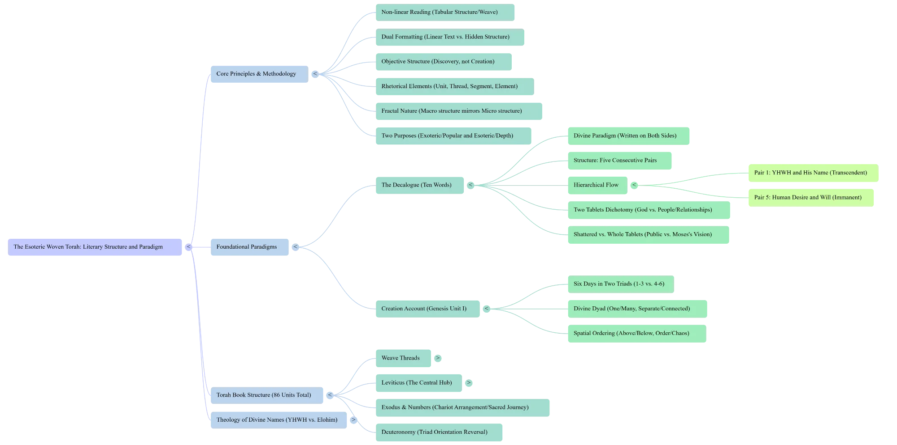

About Chaver.com
Forty years of research revealing the hidden literary architecture of Torah and Mishnah
The Discovery
What if the foundational texts of Judaism weren't meant to be read as linear sequences? What if their authors composed them as two-dimensional structures—texts that reveal their full meaning only when laid out as tables, with rows and columns creating patterns of correspondence?
This is the central finding behind Chaver.com: both the Torah and the Mishnah were composed using the same literary technique. We call these woven texts—like fabric made from warp and weft threads, meaning emerges not just from reading left to right, but from the intersection of vertical and horizontal organizing principles.
The Decalogue provides the clearest example. We're used to numbering the Ten Commandments 1 through 10 as a simple list. But they were given on two tablets—and this isn't just about fitting text onto stone. When arranged as a table with two columns and five rows, each row pairs commandments that define a single category from two perspectives: our relationship with God and our relationship with other people.
This same structural principle operates throughout both corpora—a continuous literary tradition spanning over a thousand years.
Two Corpora, One Method
The Structured Torah
The Five Books of Moses consist of 86 discrete literary units—76 regular units and 10 irregular units marking major transitions. Each unit exhibits internal two-dimensional organization with clear boundary markers.
These aren't the familiar chapter divisions (added centuries later by medieval editors). The Torah's original units are marked by features like the toledot formulas, death notices, geographic transitions, and envelope structures.
The Structured Mishnah
The Mishnah's 525 chapters across 63 tractates were composed using the same woven text principles. What appears to be a collection of random legal opinions reveals sophisticated thematic architecture when read two-dimensionally.
Pirkei Avot (Ethics of the Fathers) demonstrates this clearly: its apparent randomness disappears when the text is laid out as a matrix, revealing a carefully planned conceptual structure.

The Researcher
Moshe Kline is a graduate of St. John's College (Annapolis) and Yeshiva University. At St. John's, he studied under Jacob Klein and was influenced by the interpretive approach of Leo Strauss, who emphasized careful attention to literary structure as a key to philosophical meaning.
He later studied with Rabbi Leon Ashkenazi ("Manitou"), the influential French-Israeli thinker who pioneered structural approaches to Jewish texts. His doctoral work on the literary structure of the Mishnah was mentored by Jacob Milgrom (UC Berkeley), the preeminent scholar of Leviticus, and Mary Douglas, the British anthropologist whose work on ring composition in Leviticus and Numbers opened new avenues for understanding biblical literary structure.
Kline first documented the woven text phenomenon in his 1987 article on the Mishnah's literary structure—meaning the discovery began with rabbinic literature before being applied to the Torah. Over four decades, he systematically mapped both corpora, demonstrating that this compositional technique represents an unbroken literary tradition.
Academic Publications
Torah:
- Journal of Biblical Literature (2025) — "The Covenant Code: A New Way of Reading the Writing" (with Paul Hocking). Peer-reviewed analysis of Exodus 22:17–23:19 as woven composition.
- Society of Biblical Literature Press (2015) — "Structure Is Theology in the So-called Plague Narrative." Chapter in Current Issues in Priestly and Related Literature.
- Journal of Hebrew Scriptures (2008) — "The Editor Was Nodding: A Reading of Leviticus 19 in Memory of Mary Douglas." 59-page analysis demonstrating woven structure in the Holiness Code.
Mishnah:
- Aley Sefer, Bar Ilan University (1987) — "The Literary Structure of the Mishnah." First published documentation of woven composition in rabbinic literature.
- "The Art of Writing the Oral Tradition" — Analysis of Pirkei Avot as woven text.
Books:
- Before Chapter and Verse: Reading the Woven Torah (2022) — The complete Torah text with all 86 units in two-dimensional format. Free PDF available.
- The Structured Mishnah (PDF) — The complete Mishnah displayed in woven format.
Why It Matters
For over two centuries, critical scholarship has approached the Torah as a patchwork—fragments from different sources stitched together by later editors. Repetitions and apparent contradictions were taken as evidence of clumsy editing. The Mishnah, similarly, has often been read as a somewhat disorganized anthology of legal opinions.
The woven text paradigm offers an alternative: what looks like repetition in linear reading often turns out to be deliberate parallelism in two-dimensional structure. What seems contradictory when read sequentially reveals complementary perspectives when read as warp and weft. What appears random is actually carefully positioned.
This doesn't resolve every question about how these texts were composed. But it does suggest that their final forms exhibit far more intentional artistry than previously recognized—a sophisticated literary architecture that has been hiding in plain sight for millennia, waiting to be read the way their authors intended.
Where to Start
Questions or comments? Get in touch.